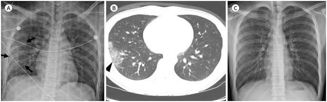
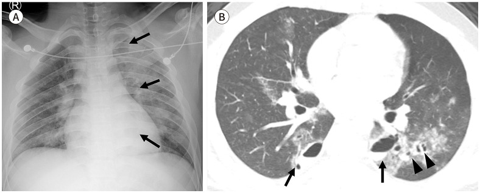
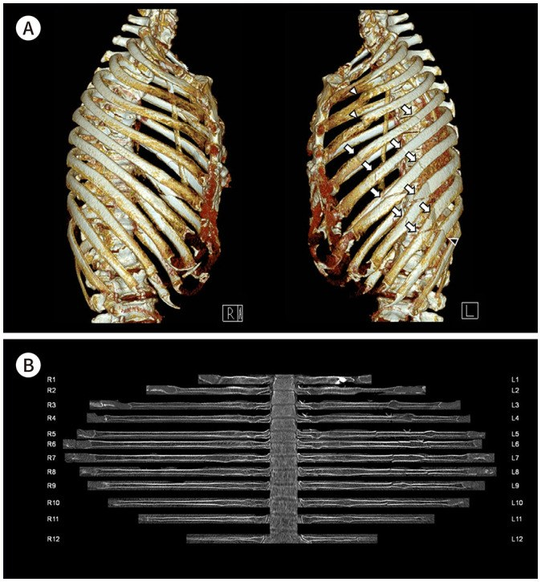
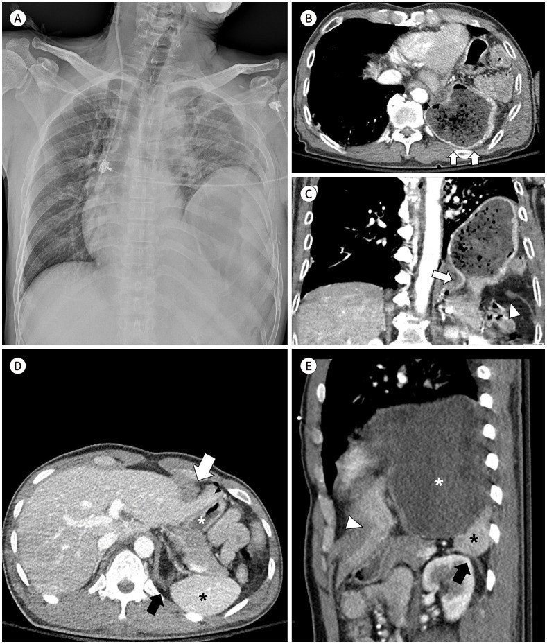
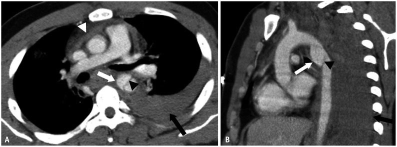
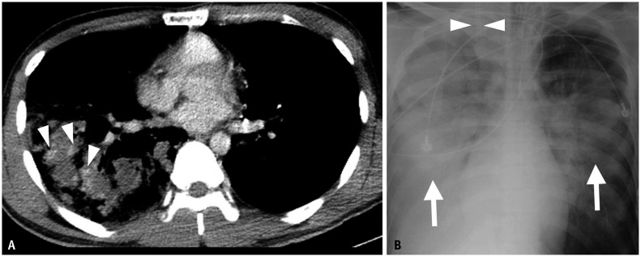
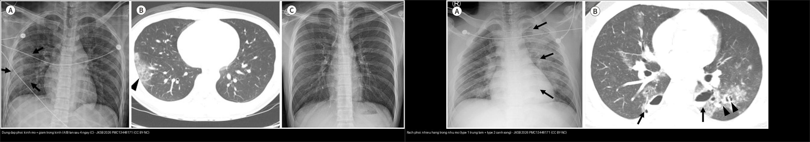

080 — Chấn thương ngực kín / Blunt chest trauma
Tags: pattern:chan-thuong pattern:dung-dap-phoi pattern:rach-phoi pattern:tran-khi-mang-phoi pattern:vo-hoanh pattern:gia-phinh-mach vung:nguc score:AAST protocol:CT-chan-thuong
Mức chắc chắn (certainty): tổng hợp y văn (literature synthesis) + ca nguyên văn (verbatim case) cho các ca ảnh — số liệu từ các bài tổng quan có PMCID, ảnh CC BY-NC 4.0/CC BY-SA 4.0.
1. Tổng quan bệnh học – cơ chế hình ảnh
- Chấn thương ngực kín gặp ở ~2/3 bệnh nhân đa chấn thương; đọc CT theo trình tự "tường ngực → màng phổi → nhu mô → đường thở → trung thất/ĐMC → hoành", mỗi tầng có ngưỡng định lượng riêng. Một nguyên tắc xuyên suốt: mọi bất thường nhu mô mới xuất hiện sau 24 giờ, lan rộng sau 2–3 ngày hoặc tồn tại > 1–2 tuần là KHÔNG điển hình cho đụng dập thuần — phải nghĩ hít sặc, viêm phổi, ARDS.
- Đụng dập phổi (pulmonary contusion) = xuất huyết phế nang + phù kẽ không phá vỡ nhu mô, chiếm tới ~75% chấn thương ngực kín. Hình ảnh: mờ kính (ground-glass) hoặc đông đặc không theo phân thùy, khớp nơi va đập/phần phổi phụ thuộc, có thể chừa 1–3 mm dưới màng phổi (subpleural sparing). TẠI SAO chừa dưới màng phổi: lực dập dồn vào nhu mô trung tâm, lớp nhu mô sát màng phổi ít bị xé — đây là dấu hiệu giúp phân biệt với viêm phổi/hít sặc (thường chạm màng phổi).
- Đường thời gian (chốt sinh học): X-quang có thể âm tính trong 6 giờ đầu, mờ đạt đỉnh 48–72 giờ; giảm bắt đầu trong 24–48 giờ và sạch hoàn toàn ~7 ngày. Khối đụng dập > ~20–30% thể tích phổi liên quan chặt với ARDS và thời gian thở máy kéo dài.
- Rách phổi (pulmonary laceration) = nhu mô bị xé; TẠI SAO thành hang: nhu mô phổi đàn hồi co lại khỏi đường rách → tạo hang cầu/elip (không phải nốt đặc), chứa khí (pneumatocele), máu (hematoma), hoặc cả hai (hematopneumatocele), có thể nhiều hang tạo hình "phô mai Thụy Sĩ" (Swiss cheese). Phân loại theo cơ chế: type 1 nén vỡ (compression rupture) hay gặp nhất, trung tâm; type 2 nén–trượt cạnh cột sống; type 3 xuyên thấu; type 4 liên quan dính màng phổi. Hầu hết tự hết trong ≤ 5 tuần; một nốt tồn tại > 4 tuần phải soi phân biệt u; rò khí từ đường thở xa > 72 giờ gợi ý còn thông với màng phổi (bài 041/618).
- Tràn khí/tràn máu màng phổi: rách nhu mô tới màng phổi; tràn khí áp lực (tension) = khí + trung thất đẩy, tim bị chèn ép — cấp cứu. Máu màng phổi (hemothorax) đậm độ 35–70 HU; máu thoát mạch hoạt tính = ổ ngấm thuốc > 90 HU to ra/đậm lên ở thì muộn; giả phình mạch phổi = ổ ngấm thuốc giữ hình, thải thuốc ở thì muộn (cùng nguyên lý tổn thương mạch khu trú như bài 627).
- Tổn thương khí–phế quản (tracheobronchial injury): khí trung thất + khí dưới da lan rộng + tràn khí dai dẳng dù đã đặt ống dẫn lưu (bài 618); cần soi phế quản ± CT lát mỏng tìm khuyết thành/bục đường thở.
- Tổn thương mạch lớn (traumatic aortic injury): hầu hết ở eo ĐMC (aortic isthmus) — nơi cố định (dây chằng động mạch) sát đoạn di động. Nặng: tới 80% tử vong tại hiện trường/trên đường vận chuyển; 50% số đến được viện tử vong trước khi sửa mạch. Dấu trực tiếp trên CT: vạt nội mạc (intimal flap) + giả phình. X-quang trung thất rộng > 8 cm có PPV < 20% → không đủ; cần CTA.
- Gãy xương sườn/tường ngực: flail chest = ≥ 3 xương sườn LIÊN TIẾP gãy ở ≥ 2 vị trí → mảng sườn di động nghịch thường (co vào khi hít vào) + pendelluft + đau → suy hô hấp. Gãy xương sườn 1 = cơ chế năng lượng cao, phải tìm tổn thương mạch dưới đòn/đám rối thần kinh cánh tay.
- Vỡ hoành (diaphragmatic rupture): ~1–15% chấn thương ngực kín; trái gặp nhiều hơn phải (gan "đỡ" lực bên phải, nhưng cũng che mất dấu hiệu vỡ phải → độ nhạy CT bên phải thấp hơn hẳn). Chẩn đoán muộn → thoát vị tạng vào ngực + tắc ruột; dấu collar sign (eo hẹp kiểu "cổ áo" nơi tạng chui qua lỗ hoành), hump sign (mô gan đội lên bên phải), dangling diaphragm sign (bờ hoành rách cuộn vào trong, độ nhạy 54%/độ đặc hiệu 98%). TẠI SAO nguy hiểm: khi đã có thoát vị, phổi bên đó bị chèn ép + tạng có thể xoắn/hoại tử.
2. Mẫu hình + chẩn đoán phân biệt theo vị trí (gamut)
- Tường ngực: gãy xương sườn (đếm số, vị trí, ≥ 3 liên tiếp × ≥ 2 chỗ = flail), gãy xương ức, di lệch đốt sống–sườn.
- Màng phổi: tràn khí (thường/tension), tràn máu, tràn dịch–khí.
- Nhu mô: đụng dập (mờ không phân thùy, chừa dưới màng phổi, tan ≤ 7 ngày) vs rách (hang chứa khí/máu, tan ≤ 5 tuần); giả phình mạch phổi (ổ ngấm khu trú giữ hình, thải thuốc thì muộn).
- Đường thở: đứt/rách khí–phế quản — khí trung thất + khí dưới da + tràn khí dai dẳng.
- Trung thất/mạch lớn: máu tụ trung thất, giả phình eo ĐMC + vạt nội mạc, rò thuốc từ động mạch vú trong/động mạch liên sườn (có thể can thiệp nội mạch).
- Hoành: vỡ hoành trái (dạ dày/đại tràng/nội tạng lên ngực) vs phải (mô gan đội lên — khó thấy).
Gamut "hang trong phổi sau chấn thương": rách phổi/pneumatocele vs áp-xe phổi (sốt + mức dịch + bờ ngấm) vs hang lao/kén bẩm sinh bội nhiễm (bài 025) — bối cảnh chấn thương + tự xẹp dần là chốt.
3. Bảng so sánh phân biệt (ma trận đối chiếu)
| Thực thể (entity) | Hình ảnh điển hình | Chốt vào (rule-in) | Chốt loại (rule-out) | Gợi ý xác nhận |
|---|---|---|---|---|
| Đụng dập phổi | Mờ kính/đông đặc không theo phân thùy, khớp nơi va đập/phần phổi phụ thuộc | Chừa 1–3 mm dưới màng phổi + mờ đỉnh 48–72 giờ + tan dần trong ~7 ngày | Mờ mới sau 24 giờ, lan nhanh > 2–3 ngày, tồn tại > 1–2 tuần → hít sặc/viêm phổi/ARDS | Đối chiếu phim cũ–mới; đặt trong bối cảnh chấn thương |
| Rách phổi (laceration) | Hang cầu/elip chứa khí (pneumatocele), máu hoặc cả hai; "phô mai Thụy Sĩ" | Hang trong nhu mô ngay sau chấn thương + tự xẹp dần (≤ 5 tuần) | Hang có mức dịch + sốt + bờ ngấm dày = áp-xe; nốt tồn tại > 4 tuần = loại trừ u | Theo dõi chuỗi phim; CT nếu tồn tại > 4 tuần |
| Tràn khí/tràn máu màng phổi | Khí/dịch màng phổi, có thể mức khí–dịch | Khí + gãy xương sườn cùng bên; tension = trung thất đẩy + tim bị chèn | Dịch không có máu (0–15 HU) + không chấn thương → nghĩ bệnh nội khoa | X-quang tại giường; CT khi nghi tổn thương phối hợp |
| Tổn thương khí–phế quản | Khí trung thất + khí dưới da lan rộng, tràn khí dai dẳng dù đã dẫn lưu | Tràn khí tái diễn/dai dẳng + khí trung thất + khuyết thành đường thở trên CT lát mỏng | Tràn khí đơn thuần, đáp ứng dẫn lưu → không cần soi | Nội soi phế quản (chẩn đoán xác định) |
| Tổn thương ĐMC (tại eo) | Vạt nội mạc + giả phình + máu tụ trung thất, kèm tràn máu màng phổi trái | ĐMC eo + dấu trực tiếp (flap/giả phình) trên CTA | X-quang trung thất rộng > 8 cm đơn thuần (PPV < 20%) không đủ chốt/loại | CTA thì động mạch; DSA khi chỉ có dấu gián tiếp |
| Gãy xương sườn/flail chest | Nhiều đường gãy; 3D thấy mảng sườn di động | ≥ 3 xương sườn liên tiếp gãy ≥ 2 vị trí = flail | Gãy 1 xương sườn đơn độc, không di lệch → thường không cần cố định | Tái tạo 3D + in-plane; đếm vị trí gãy |
| Vỡ hoành | Tạng ổ bụng/dạ dày trong ngực; collar sign, hump sign (phải), dangling sign | Tạng chui qua lỗ hoành + eo hẹp kiểu cổ áo nơi tạng đi qua | Hoành nâng cao đơn thuần không có tạng lạc chỗ → chưa đủ; vỡ phải dễ bỏ sót | CT MPR coronal/sagittal; độ nhạy CT thấp hơn bên phải |
- Ảnh ghép đối chiếu:
— đụng dập (mờ kính có chừa dưới màng phổi, tan sau 4 ngày) đặt cạnh rách phổi (nhiều hang trong nhu mô, type 1 trung tâm + type 2 cạnh sống), cùng bài gốc.
Đọc đúng hai bẫy kinh điển
- Đụng dập vs hít sặc/viêm phổi: hít sặc/viêm phổi theo đường thở/phân thùy, chạm màng phổi, lâm sàng sốt–bạch cầu; đụng dập không phân thùy, chừa dưới màng phổi, tan theo thời gian.
- Hang rách phổi vs áp-xe: hang rách xuất hiện ngay–trong vài giờ, thành mỏng, tự xẹp; áp-xe sốt + mức dịch + bờ ngấm, không tự xẹp.
4. Protocol chụp + hệ phân độ/điểm chuẩn hóa
- CT ngực có cản quang là tiêu chuẩn cho chấn thương ngực kín; CT không cản quang đủ cho xương sườn/tràn khí/nhu mô nhưng kém nhạy với tổn thương mạch → nghi tổn thương mạch lớn phải chụp CTA thì động mạch, thêm thì muộn để phân biệt chảy máu hoạt tính với giả phình.
- Dùng cửa sổ xương (trục + in-plane + 3D) cho tường ngực, cửa sổ phổi cho nhu mô/đường thở, cửa sổ trung thất cho ĐMC/máu tụ; MPR coronal/sagittal bắt buộc để đánh giá hoành và tổn thương mạch.
- Phân độ/điểm:
- AAST-OIS ngực cho từng cấu trúc (đụng dập phổi phân độ theo thùy; mức > 20–30% thể tích phổi = nguy cơ ARDS cao).
- Flail chest: ≥ 3 xương sườn liên tiếp × ≥ 2 vị trí; đếm số xương gãy để tiên lượng (càng nhiều càng dễ suy hô hấp) — cố định xương sườn (surgical stabilization) cân nhắc khi di lệch nhiều/mảng sườn nặng.
- Tổn thương ĐMC: xác định vạt nội mạc/giả phình và vị trí so với eo ĐMC; phân độ theo SVS; TEVAR (stent graft nội mạch) là điều trị chính và đã giảm tử vong đáng kể — chuyển sang can thiệp nội mạch cho cả các nguồn nhỏ hơn (động mạch vú trong, thân giáp cổ).
- X-quang ngực tại giường chỉ là sàng lọc ban đầu (có thể âm tính 6 giờ đầu với đụng dập); không thay CT tìm tổn thương ẩn. Lặp lại khi diễn biến xấu (tràn khí tăng, tụt HA, SpO₂ giảm).
flowchart TD
A[Chấn thương ngực kín] --> B{X-quang + siêu âm FAST tại giường}
B --> C{Huyết động ổn định?}
C -->|Không| D[Cấp cứu: dẫn lưu màng phổi, xử trí tràn khí áp lực; CT khẩn khi cho phép]
C -->|Có| E[CT ngực cản quang ± CTA thì động mạch]
E --> F{Tầng tổn thương?}
F -->|Màng phổi| G[Tràn khí/máu: dẫn lưu khi ép/tăng]
F -->|Nhu mô| H[Đụng dập: hỗ trợ hô hấp, KHÔNG kháng sinh thường quy; Rách: theo dõi]
F -->|Đường thở| I[Tràn khí dai dẳng + khí trung thất: nội soi phế quản]
F -->|Mạch lớn| J[Giả phình/vạt nội mạc eo ĐMC: TEVAR]
F -->|Tường ngực| K[Flail chest: giảm đau, thông khí, cân nhắc cố định xương sườn]
F -->|Hoành| L[Vỡ hoành: mổ]
5. Biến thể bình thường và cạm bẫy
- Đụng dập gọi nhầm viêm phổi → kháng sinh vô ích; và ngược lại hít sặc/viêm phổi gọi nhầm đụng dập → bỏ sót nhiễm trùng. Chìa khóa: bờ chạm màng phổi, phân bố theo đường thở, và đường thời gian.
- Pneumatocele gọi nhầm kén bẩm sinh/áp-xe — hỏi tiền sử chấn thương, theo dõi tự xẹp; nốt/hang tồn tại > 4 tuần phải soi loại trừ u.
- Tổn thương ĐMC bỏ sót khi chỉ dựa vào X-quang (trung thất rộng PPV < 20%): cơ chế nặng → CTA ngay.
- Vỡ hoành phải khó thấy (mô gan đội lên mờ nhạt; độ nhạy CT bên phải thấp hơn) → tìm dấu hump/collar, đối chiếu MPR.
- "Tràn khí dai dẳng" sau đặt ống dẫn lưu không được coi là thất bại kỹ thuật đơn thuần — phải loại trừ rách khí–phế quản (bài 618).
- Thỏa mãn tìm kiếm (satisfaction of search): thấy gãy xương sườn rồi dừng đọc → bỏ sót giả phình eo ĐMC, rách phổi, vỡ hoành. Đọc đủ 6 tầng theo trình tự cố định.
- Beam hardening do xương sườn/ống nội khí quản tạo vệt tăng/giảm đậm độ giả trong nhu mô — đối chiếu nhiều bình diện, đừng chốt trên 1 lát.
6. Tự lượng giá — Blind Quiz
Ca 1 — Nam 16 tuổi, tai nạn xe máy, đau ngực phải. X-quang lúc vào (A), CT (B), X-quang sau 4 ngày (C).

- Gợi ý lâm sàng (clinical context): chấn thương ngực kín, ổn định huyết động.
- Câu hỏi: Dấu hiệu chính trên CT? Dấu hiệu nào giúp phân biệt với viêm phổi? Diễn biến thời gian ra sao?
Bấm để hiện đáp án (findings + chẩn đoán)
- Dấu hiệu (findings): (A) X-quang mờ kính khu trú thùy dưới phải (mũi tên); (B) CT thấy mờ kính không theo phân thùy, chừa 1–3 mm dưới màng phổi (đầu mũi tên); (C) sau 4 ngày mờ giảm gần hết.
- Chẩn đoán (diagnosis): đụng dập phổi — mờ do xuất huyết phế nang, không phân thùy, chừa dưới màng phổi, đạt đỉnh 48–72 giờ rồi tan trong ~7 ngày (khác viêm phổi/hít sặc chạm màng phổi + theo đường thở). Không cần kháng sinh thường quy, chỉ hỗ trợ hô hấp.
- Nguồn ảnh: Kim YN et al., J Korean Soc Radiol 2026 (PMC13448171), CC BY-NC 4.0.
Ca 2 — Nam 17 tuổi, tai nạn xe máy: X-quang (A) và CT nhu mô (B).

- Gợi ý lâm sàng: chấn thương ngực kín, khó thở.
- Câu hỏi: Mô tả tổn dạng nhu mô? Cơ chế tạo hang? Có phải áp-xe không?
Bấm để hiện đáp án (findings + chẩn đoán)
- Dấu hiệu: (A) X-quang nhiều ổ mờ + mức khí–dịch trong phổi trái (mũi tên); (B) CT: nhiều hang khí trong nhu mô (đầu mũi tên) — phía trung tâm thùy dưới trái = type 1 (nén vỡ), cạnh cột sống hai bên = type 2 (nén–trượt), quanh đó là đụng dập.
- Chẩn đoán: rách phổi nhiều hang — nhu mô co đàn hồi khỏi đường rách tạo hang chứa khí (pneumatocele); không phải áp-xe vì xuất hiện ngay sau chấn thương, thành mỏng, tự xẹp dần (hầu hết ≤ 5 tuần). Cần theo dõi; nốt tồn tại > 4 tuần phải loại trừ u.
- Nguồn ảnh: Kim YN et al., J Korean Soc Radiol 2026 (PMC13448171), CC BY-NC 4.0.
Ca 3 — Người bệnh tai nạn người đi bộ, đa chấn thương. Tái tạo 3D + in-plane xương sườn.

- Gợi ý lâm sàng: chấn thương năng lượng cao, suy hô hấp.
- Câu hỏi: Đếm tổn thương? Tiêu chuẩn flail chest? Vì sao flail gây suy hô hấp?
Bấm để hiện đáp án (findings + chẩn đoán)
- Dấu hiệu: (A) tái tạo 3D và (B) in-plane: gãy xương sườn 3–10 và 12 bên trái; xương sườn 3–4 gãy di lệch; mảng sườn gãy ≥ 2 vị trí trên ≥ 3 xương liên tiếp = flail chest.
- Chẩn đoán: mảng sườn di động (flail chest) — mảng di chuyển nghịch thường (co vào khi hít vào) gây pendelluft + đau → giảm thông khí, dẫn suy hô hấp. Xử trí: giảm đau tích cực, thông khí hỗ trợ, cân nhắc cố định xương sườn khi di lệch nặng.
- Nguồn ảnh: Choi JM et al., J Korean Soc Radiol 2026 (PMC13448060), CC BY-NC 4.0.
Ca 4 — Bệnh nhân tai nạn giao thông, X-quang ngực (A) và CT ngực (B, C, D, E).

- Gợi ý lâm sàng: chấn thương ngực kín, đau bụng ngực trái, nôn.
- Câu hỏi: Dấu hiệu chính? Dấu "collar sign" là gì? Vì sao vỡ hoành phải khó chẩn đoán hơn?
Bấm để hiện đáp án (findings + chẩn đoán)
- Dấu hiệu: (A) X-quang: hoành trái nâng cao, trung thất đẩy sang phải, tràn khí trái; (B, C, D, E) CT: dạ dày (và mỡ/tạng) thoát vị lên ngực trái qua lỗ hoành với eo hẹp kiểu "cổ áo" (collar sign) nơi tạng đi qua (mũi tên), dấu dangling bờ hoành cuộn vào trong (mũi tên trắng), túi khí trong lồng ngực.
- Chẩn đoán: vỡ hoành trái do chấn thương — xảy ra ~1–15% chấn thương ngực kín, trái nhiều hơn phải; chẩn đoán muộn → thoát vị/tắc ruột. Bên phải khó hơn vì mô gan đội lên mờ nhạt (hump sign) + độ nhạy CT bên phải thấp hơn → đối chiếu MPR. Xử trí: mổ.
- Nguồn ảnh: Choi JM et al., J Korean Soc Radiol 2026 (PMC13448060), CC BY-NC 4.0.
Ca 5 — Bệnh nhân chấn thương ngực nặng: CT ngực thì mạch (A) và tái tạo coronal oblique (B).

- Gợi ý lâm sàng: tai nạn tốc độ cao, đau ngực, X-quang trung thất rộng.
- Câu hỏi: Dấu hiệu trực tiếp? Vị trí hay gặp? Vì sao X-quang "trung thất rộng" không đủ chốt? Điều trị chính hiện nay?
Bấm để hiện đáp án (findings + chẩn đoán)
- Dấu hiệu: (A) CT trục và (B) tái tạo coronal oblique: giả phình ĐMC tại eo (mũi tên trắng) + vạt nội mạc ngắn (đầu mũi tên đen), kèm máu tụ trung thất và tràn máu màng phổi trái.
- Chẩn đoán: tổn thương ĐMC ngực do chấn thương (tại eo) — tới 80% tử vong tại hiện trường; trong số đến viện, 50% tử vong trước khi sửa mạch. X-quang trung thất rộng > 8 cm có PPV < 20% → phải CTA. Chẩn đoán xác định = dấu trực tiếp (flap/giả phình); điều trị chính TEVAR (stent graft nội mạch).
- Nguồn ảnh: Wong YC et al., Korean J Radiol 2023 (PMC10400372), CC BY-NC 4.0.
Ca 6 — Bệnh nhân chấn thương ngực nặng, CT ngực cản quang (A) và X-quang theo dõi (B). Bấm để xem đáp án 2 ảnh + ảnh ghép.

- Gợi ý lâm sàng: đa chấn thương, suy hô hấp tiến triển nhanh.
- Câu hỏi: Trong ổ đụng dập/rách có gì đặc biệt? Vì sao phải chụp thì mạch và theo dõi sát?
Bấm để hiện đáp án (findings + chẩn đoán)
- Dấu hiệu: (A) CT cản quang: đụng dập + rách phổi phải, trong ổ máu tụ có nhiều giả phình mạch phổi nhỏ (đầu mũi tên) — ngấm thuốc giữ hình; (B) X-quang sau đó: xuất huyết tiến triển nhanh (mũi tên) hai bên.
- Chẩn đoán: đụng dập/rách phổi nặng kèm giả phình mạch phổi + xuất huyết tiến triển — tổn thương mạch nhỏ cũng có thể chảy máu ồ ạt, cần can thiệp nội mạch (nút mạch); nguyên lý phân biệt giả phình (giữ hình, thải thuốc thì muộn) vs chảy máu hoạt tính (> 90 HU, to ra) giống bài 627.
- Nguồn ảnh: Figure 10, Wong YC et al., Korean J Radiol 2023 (PMC10400372), CC BY-NC 4.0. Ảnh ghép đối chiếu:

Bài liên quan chéo
- 001 – Tổng quan hệ Ngực
- 025 – Hang & nấm phổi (pneumatocele vs áp-xe)
- 041 – Tràn khí màng phổi (dẫn lưu)
- 045 – Thành ngực & hoành (vỡ hoành)
- 618 – Rò phế quản–màng phổi & rò khí dai dẳng
- 627 – Giả phình mạch & xuất huyết muộn (nguyên lý tổn thương mạch khu trú)
Ảnh
- Tên file:
080_*. Nguồn + giấy phép từng ảnh trongimages/CREDITS.md. - Ảnh ghép:
images/composite_dung-dap-vs-rach-phoi.jpg(Pillow letterbox, giữ aspect, không crop/kéo giãn). Ảnh CC BY-NC 4.0 giữ nguyên bản, không ghép; ảnh ghép chỉ dùng ảnh trong bài (đều CC BY-NC 4.0 — ghi nguồn đầy đủ).
Không dùng để chẩn đoán độc lập khi chưa có người hướng dẫn.